There is a growing movement (commonly called the STEAM movement) to integrate the Arts into STEM (Science, Technology, Engineering, Math), in orer to pique the interest of those, especially kids, who would not typically be interested in STEM topics.
“Waton's powerful language tools have been used to analyze everything from Jeopardy questions to medical documents. Why not expand Watson's expertise into the realm of art and entertainment?”
This article will give you a foundation to connect the powerful langauge processing capabilities of Watson to the songs and lyrics you love. We will start by authenticating with a Spotify account to retrieve playlists of popular songs, then fetching those song lyrics from genius.com, and finally using the Watson Developer Cloud to do fun and interesting things with the lyrics.
In this installment of "Making Watson a Rock Star", we will use the Watson Language Translation service to translate the lyrics of popular songs into Spanish, to help English-speaking users improve their Spanish in a way that is fun, engaging, and memorable.
What you'll need to build a similar app
- A Bluemix account
- A basic familiarity with Node.js and a Node.js development environment.
- These Node.js modules:
- Express framework: Makes it easy to build Node.js web apps.
- Watson Developer Cloud: Provides many SDKs that use cognitive computing to solve complex problems.
- RapGenius-JS module: Provides a client that enables you to query genius.com (formerly rapgenius.com) and retrieve information about rap and rock artists and songs.
WATCH:Getting started with Node.js (video demo)
READ:Uploading your application
READ:Spotify Authorization Guide
The steps below describe the most basic approach. For more advanced tooling to speed your development, see Additional tooling considerations.
Step 1. Fork the application code from github
- Go to the git repository, and click on "Fork" in the upper-right-hand corner.
- Give the repository whatever name you want.
- On your command line, change into whatever repository you would like.
git clone git@github.ibm.com:disaster-hack-cio/cuantos-caminos.git cdinto your new repositorycd authorization_code- Use your preferred text editor to edit the
manifest.ymlfileListing 1. manifest.yml
-
Push your application to Bluemix using the following commands
cf api api.ng.bluemix.netcf logincf pushCtrl+Cto cancel the push, after you can see it has failed
If you go to your app, you should see that it is not working properly...
Step 2. Create a Watson Language Translation service, and bind your Bluemix app to it.
In our last step we got the code and created our Bluemix app. Now we are going to create a Watson Language Translation Service to bind to our application.
- Log in to your Bluemix Account on the Bluemix Console
- Click on CATALOG to go to the Services
- Check the Watson checkbox on the left-hand panel to filter only the Watson services
- Find and click the Language Translation Service
- Fill in the boxes with your desired app, the desired name of the service, and the Standard plan. Click CREATE to create your new service
Figure 1. Create a new Watson Languate Translation Service
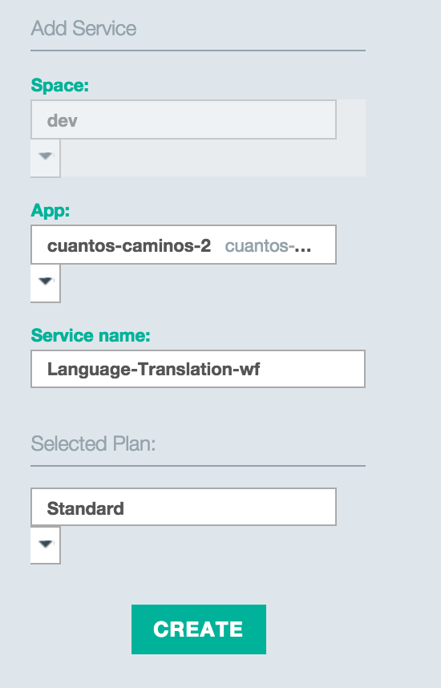 - Restage your application to allow it to bind to your new service
Great! Your application should now be running! Let's go to our new application url and see what happens.
Figure 2. Looks good so far
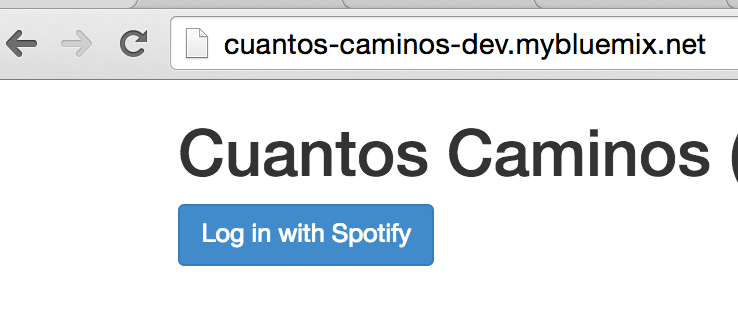Let's try logging in with Spotify.
Figure 3. Invalid Client
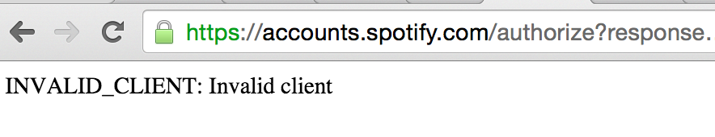Continue to the next step to see how to fix this
Step 3. Register your application with Spotify.
We cannot yet authenticate because we have not registered our application with Spotify. Follow these steps to do that.
- Go to your Spotify Developer Account to manage your applications. Log in if necessary.
-
Click on CREATE AN APP
Figure 4. Create an App
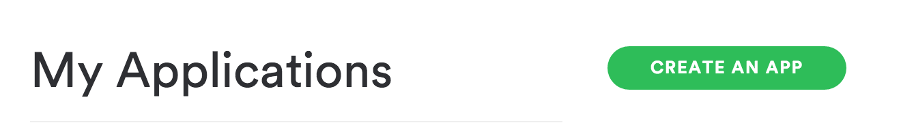 -
Fill out your application name and description
Figure 5. Name your App
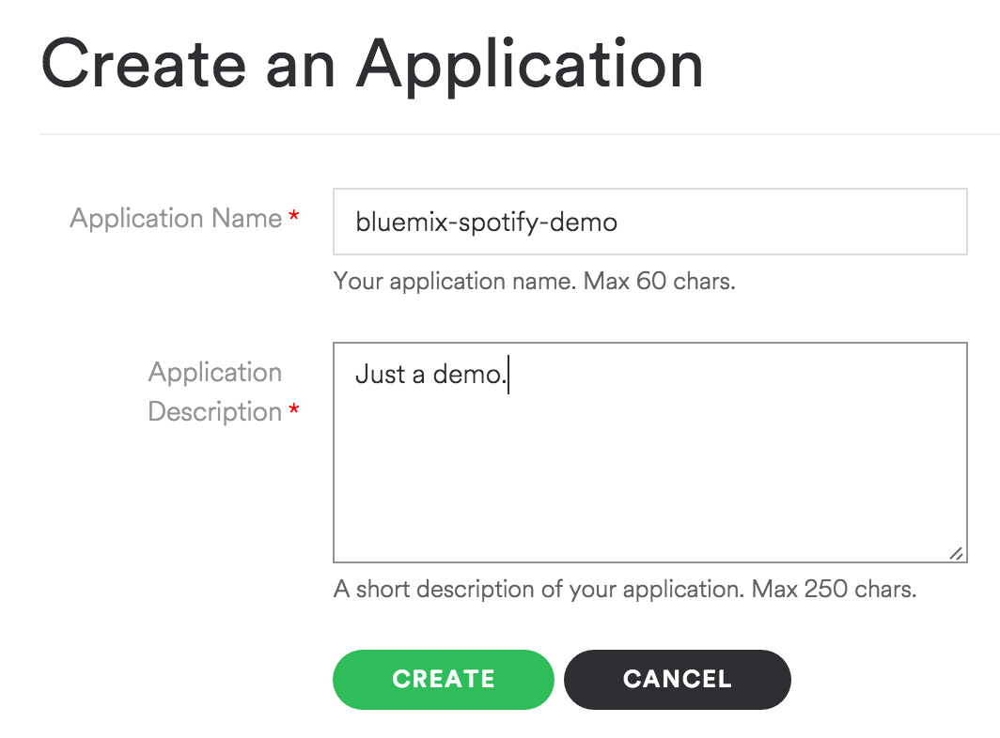 -
Fill out your application name and description
Figure 6. Name your App
-
Here comes the important part. On this page, we will copy our Client ID and our Client Secret, and we will also specify the Redirect URIs for our app.
-
Copy the Client ID and Client Secret, and paste them into your config.js file.
Figure 7. Client ID and Client Secret
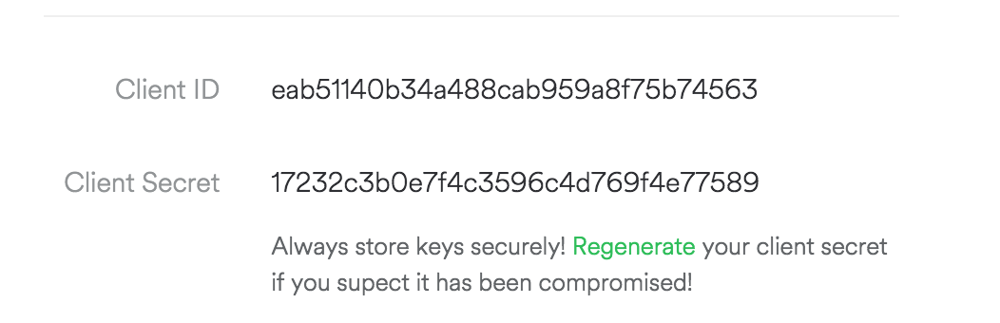Listing 2. config.js
-
Copy the Client ID and Client Secret, and paste them into your config.js file.
Step 4 (Optional). Add your own playlist to the selection.
Okay, now we have all the parts in place to complete your app. The app defaults to use three playlists: a Rock playlist, a Rap playlist, and a Beatles playlist. Follow these instructions to add your own (please don't add a playlist of your favorite ambient electronic tracks or orchestral arrangements, as they won't have lyrics).
To add your own Playlist, you need two fields:
- the Spotify id of the user who owns the playlist
- The playlist id
- Go to your playlist, in the web browser or native app.
- Click the dropdown menu, and click on "Copy Spotify URI" 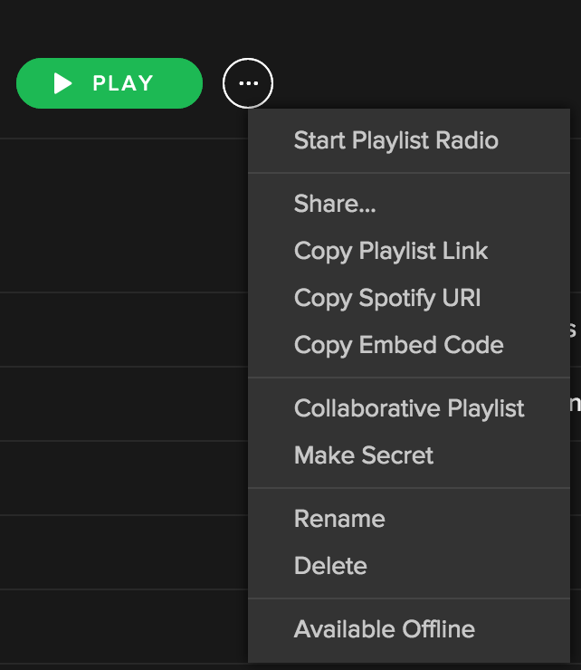
- Go to the angular file [public/js/quiz.js] and find the variable 'playlist_map' 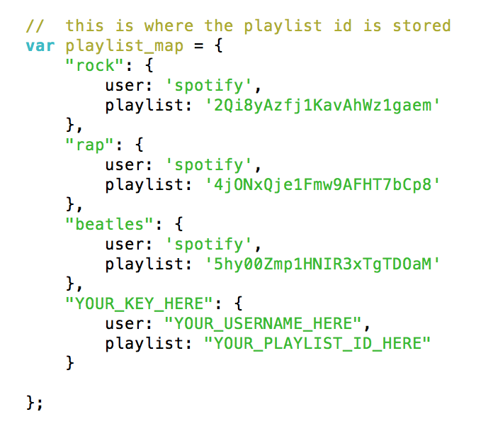
- Create a new key in the map with value having your user id and spotify id.
- Go to the html file [public/index.html] and find where all the playlists are displayed. 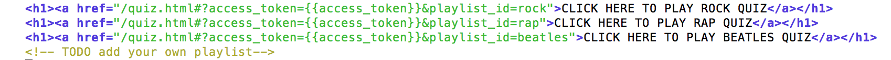
- add a new line, with playlistid=x, where x is the key you used in the previous 2 steps.
Step 5. Testing Locally
node app.js- Open your browser and go to
localhost:8888
Let’s try our app locally. Here are a few simple example questions:
Figure 8. Some words don't translate well to Spanish.
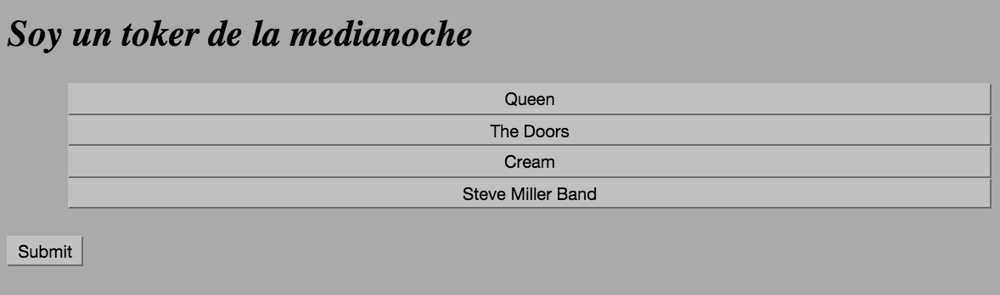Figure 9. Some songs have a lot of repetition.
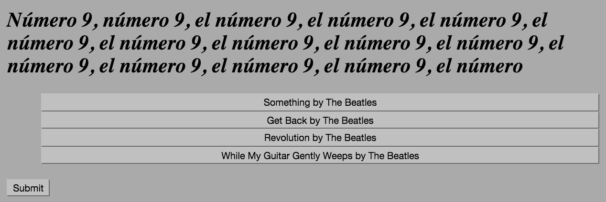Figure 10. Hey, now here's a popular song that a lot of people know.
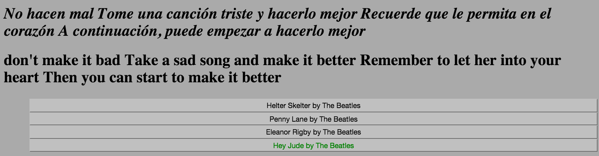Conclusion and Next Steps
The Translation Service is just one of many Watson Language Services made available on Bluemix. Which of the other Watson Services do you think we could use in conjunction with song lyrics?
- Sentiment Analysis -- track the overall sentiments of songs, and then generate playlists which cater to a certain mood.
- Concept Insights -- extract what concepts artists are singing about, and contrast and compare them.
- Relationship Extraction (Alchemy API) -- find relationships between subjects, actions, and objects in songs, and build a database of lyrics tools to generate new songs.
RELATED TOPICS:Node.jsJavaScriptSocial analytics
RIGHT COLUMN RESERVED FOR INLINE COMMENTING
AREA DOES NOT APPEAR IN PREVIEW MODE